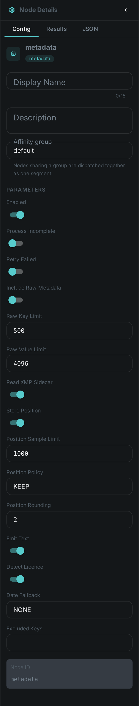
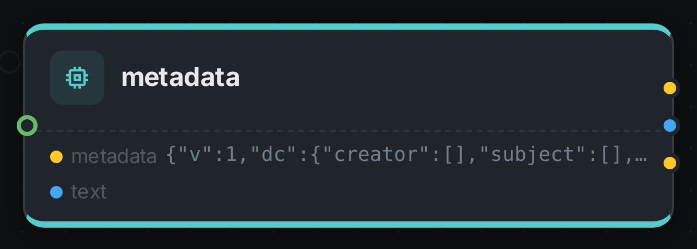

Every media file arrives already knowing things about itself. Who took the photograph, when, and where. What the picture is called, what it shows, which keywords the photographer attached. Which licence it may be published under, and who has to be credited.
Most media systems throw all of that away at the door and then ask people to type it back in. This node reads it instead.
It works on photographs, documents, audio and video, and it does not need a model, a GPU or anything installed alongside it.
Kind |
|
Applies to |
Images, documents, audio, video |
Input ports |
|
Output ports |
|
Requirements |
None — no model, no sidecar, no GPU |
Persists to |
The asset’s metadata record, plus a position on the asset when the file carried one |
What it reads
Media files describe themselves in half a dozen different standards, which overlap, contradict each other, and are named after the decades they came from. This node knows all of them so nobody else has to:
| Where it comes from | What it gives you |
|---|---|
Camera data (EXIF) |
Make, model, lens, exposure, aperture, ISO, focal length, flash, orientation, and the date the shutter opened |
Position (GPS) |
Latitude, longitude, altitude, heading, and the reported accuracy |
Newsroom fields (IPTC) |
Headline, caption, byline, credit, source, copyright notice, city and country, keywords |
Modern embedded metadata (XMP) |
Title, description, creator, keywords, rights, licence, and everything editors write back into a file |
Companion |
The same information when an editor kept it beside the file rather than inside it |
Documents |
Title, author, subject, keywords, page count and creating application, from PDF, Word, Excel, PowerPoint, OpenDocument and EPUB |
Audio |
Artist, album, genre, track number, year and tempo, from the tags in the file |
Video |
Title, creation date and the descriptive tags the container carries |
What you get back
One record per asset, in one shape, no matter which standards the file happened to speak:
{
"v": 1,
"dc": {
"title": "Sunrise over Fuji",
"creator": ["Jane Doe"],
"subject": ["sunrise", "mountain", "japan"],
"description": "Taken from the fifth station.",
"date": "2019-04-03T05:12:44+09:00",
"type": "StillImage",
"format": "image/jpeg",
"language": "en",
"coverage": "Fujinomiya, Shizuoka, JP",
"rights": "© 2019 Jane Doe"
},
"rights": {
"statement": "© 2019 Jane Doe",
"holder": "Jane Doe",
"licenseUrl": "https://creativecommons.org/licenses/by/4.0/",
"licenseId": "CC-BY-4.0",
"credit": "Jane Doe / MetaLoom",
"marked": true
},
"capture": {
"make": "SONY", "model": "ILCE-7M3", "lens": "FE 24-70mm F2.8 GM",
"dateTimeOriginal": "2019-04-03T05:12:44+09:00",
"exposureTime": 0.004, "fNumber": 8.0, "iso": 100,
"focalLength": 35.0, "flash": false, "orientation": 1
},
"geo": {
"lat": 35.360833, "lon": 138.727500, "altitudeM": 2305.0,
"place": { "city": "Fujinomiya", "state": "Shizuoka", "country": "JP" }
},
"provenance": {
"dc.title": "xmp:dc:title",
"dc.date": "exif:DateTimeOriginal"
},
"sources": ["exif", "xmp", "iptc"]
}The vocabulary is Dublin Core — the same fifteen elements libraries, archives and publishers have been exchanging metadata in for thirty years — so what comes out of this node is what other systems expect to receive.
Values are cleaned up, not passed through
Exposure comes back as 0.004 seconds, not "1/250". Aperture is a number, not "f/8.0".
Coordinates are decimal degrees, not 35 deg 21' 39.00" N. Whether the flash fired is true or
false. Anything you would otherwise have to parse again downstream has already been parsed.
Nothing is invented
A field the file did not carry is simply absent. It is never an empty string, never a zero, and never a guess — so "this photo has no position" and "this photo was taken at the equator" can be told apart.
The same applies to the harder cases:
-
A licence is only reported when the file names a known licence URL. A wrong
CC-BYon an all-rights-reserved photo is worse than no answer, because it is the answer a "what may we publish?" search trusts. -
The language is never detected, only reported when the file states it.
-
A place name never becomes a coordinate. If a file says "Fujinomiya" but carries no GPS, you get the name and no position.
It tells you where each value came from
The provenance block records which raw field won each value. Cameras, phones and photo editors
routinely write the same caption into three different places with two different values, so knowing
which one was used is the difference between trusting the catalogue and second-guessing it.
Which one wins is decided consistently: authored text prefers what the editor wrote, dates prefer what the camera recorded. The camera writes the date once; every editor that touches the file rewrites its own copy — while the camera’s text fields cannot represent anything outside plain ASCII and mangle every non-Latin script.
Feeding other nodes
The text output carries the authored prose alone — title, description, keywords, creator — so the
text nodes can work on it without knowing anything about photography:
-
Translate — turn a German caption catalogue into an English one.
-
Sentiment Analysis — score the tone of supplied descriptions.
-
LLM Enrichment — expand terse keywords into usable descriptions, or normalise inconsistent ones.
-
Filter — route assets by what their metadata says.
The geo output carries just the coordinate, ready for whatever should act on a position.
Configuration

| Option | Meaning |
|---|---|
|
Also keep every original field, unmapped. Off by default — camera manufacturer data is unpredictable and has been known to contain serial numbers and owner names |
|
Upper bounds on that raw copy. Defaults 500 entries and 4 KB per value |
|
Read a companion |
|
Store the position on the asset. On by default |
|
|
|
How much precision to keep when rounding. Default 2, roughly 1.1 km |
|
Upper bound on the number of position readings kept per asset. Default 1000 |
|
Produce the plain-text output. On by default |
|
Recognise well-known licence URLs and record a short identifier for them. On by default |
|
|
|
Fields to drop before anything reads them |
Each of these is set on the node in the pipeline, not on the worker, so one pipeline can round coordinates while another keeps them exact — even when both run on the same machine.
Seeing it run
Turn on Debug Mode and every node keeps what it produced, on the
card itself. Below is a real run of this node over pexels-photo-2379005.jpeg.

The strip on the card lists what each output port carried — metadata, text.
Use Cases
-
Stop retyping what you already have. Titles, captions, keywords and credits arrive with the files; this is what makes them searchable.
-
Answer "what may we publish?" — find everything under a permissive licence, and everything whose rights are unstated.
-
Put the archive on a map. Photographs and drone footage carry where they were taken.
-
Give credit correctly. Photographer, byline and credit line come from the file rather than from memory.
-
Sort by when it was taken, not when it was copied. The camera’s date survives every backup, restore and re-upload that resets the file’s timestamp.
-
Find the equipment. Everything shot on a particular body or lens, for a recall, a licence audit or a quality investigation.
Privacy
This node reads personal information on purpose, and that deserves saying plainly. A GPS tag on a holiday photo is frequently a home address. A creator field is a named person. Camera manufacturer data has, in some generations, carried serial numbers and owner names.
Three things follow:
-
gpsPolicyis a real setting, not a footnote. A shared or public collection can round positions to about a kilometre, or drop them entirely, while the internal archive keeps them exact. -
Rounding on the way in cannot be undone. It changes the stored value for everyone, including the people who were entitled to the precise one. If the concern is who sees a position rather than whether it is recorded, the answer is to control access to it, not to destroy it on arrival.
-
Deleting an asset deletes its metadata, including its position, in the same operation.
Good to know
-
A file with no metadata is a success, not a failure. Stock photography routinely arrives stripped; the node records that the file says nothing about itself and moves on. A file that cannot be read is reported as a failure, so it shows up in the run summary instead of disappearing.
-
It reports what the file claims, not what the file is. Width, duration and bitrate as stated by the container are frequently wrong — rotated video, truncated durations, variable-bitrate audio quoting a nominal figure. Measured values come from Quality, and the two are kept separately on purpose.
-
It does not extract document text. That is Tika and its
contentport. Run both if you want the words as well as the properties. -
Dates without a timezone stay without one. Cameras record local time and usually say nothing about where "local" was. Assuming UTC would move an evening photograph into the next day and quietly corrupt every date range you search on.
-
A missing companion
.xmpfile is completely normal and never treated as a problem. -
Some formats are not covered yet: Matroska/WebM tags, AVCHD companion files, and a few camera raw dialects.